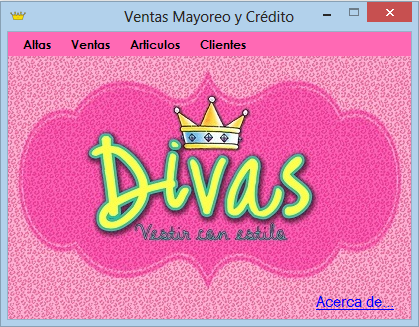
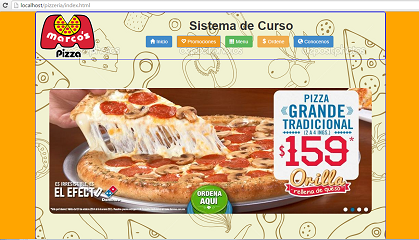
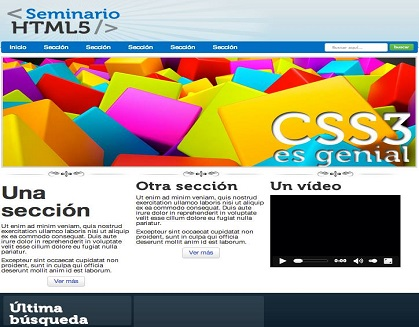
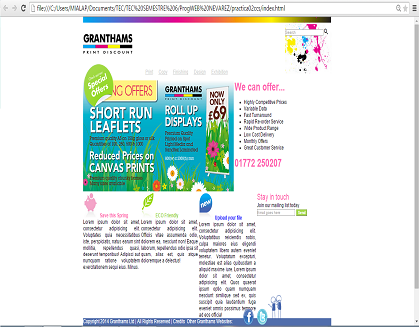
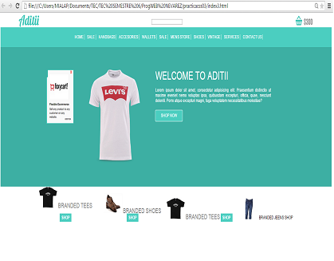
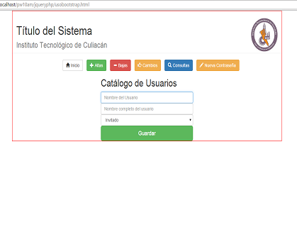
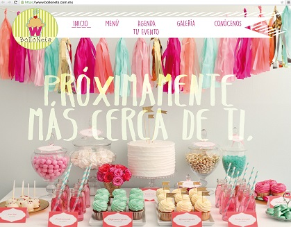

Datos personales:
Mia Silvia Cecilia Sainz Chávez
Cel.(667)244 31 99
miasainz@gmail.com
Culiacán Sinaloa
Estudio:
2012 - Actualmente estudiando.
Ingeniería en Tecnologías de la Información y Comunicaciones.
Instituto Tecnológico de Culiacán.
Idiomas:
Español
Ingles
Lenguajes manejados:
Java
C#
HTML 5
Habilidades:
Diseño Web
Desarrollo Web
Diseño Grafico
Aptitudes:
Trabajo en equipo
Facilidad de aprendizaje
Honestidad
Toma de decisiones Proyecto realizado en la materia Programacion II.
Maestra: Gloria Ekaterine Peralta Peñuñuri. Proyecto realizado en la materia Taller de Ingeniería de software.
Maestro: Marco Antonio Rodriguez. Práctica realizado en la materia Programación Web.
Maestro: Martín Leonardo Nevarez Rivas. Práctica realizado en la materia Programación Web.
Maestro: Martín Leonardo Nevarez Rivas. Práctica realizado en la materia Programación Web.
Maestro: Martín Leonardo Nevarez Rivas. Proyecto realizado en la materia Programación Web.
Maestro: Martín Leonardo Nevarez Rivas. Proyecto realizado en la materia Desarrollo de Emprendedores.
Maestra: Lourdes Lindoro.